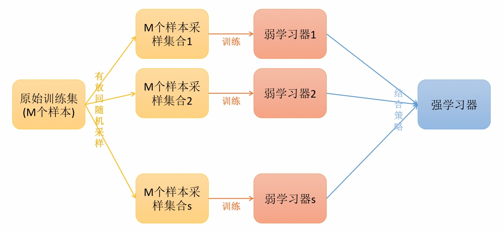
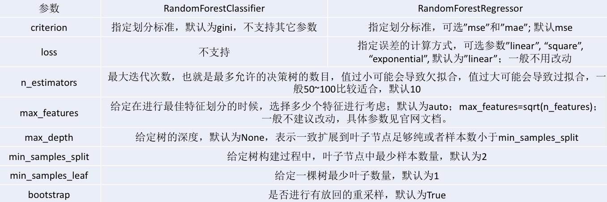
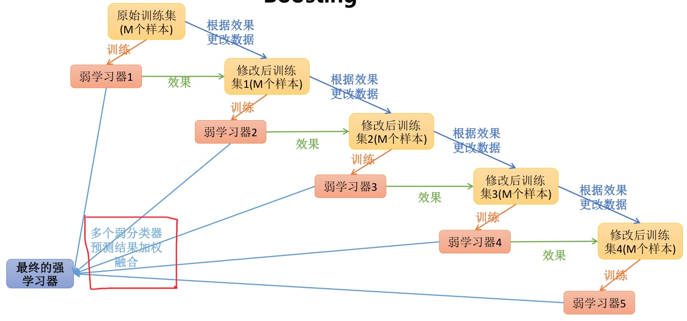
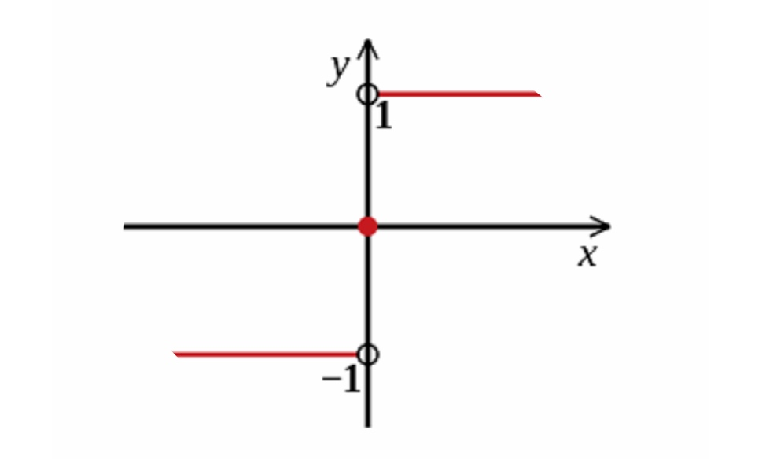
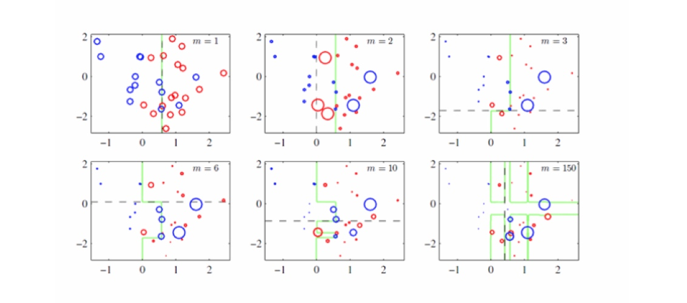
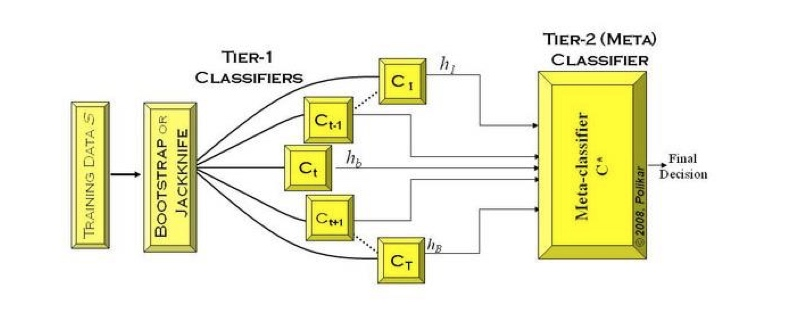

集成学习的思想是将若干个学习器(分类器&回归器)组合之后产生一个新学习器.弱分类器(weak learner)指那些分类准确率只稍微好于随机猜测的分类器(error rate< 0.5).
集成算法的成功在于保证弱分类器的多样性(Diversity).而且集成不稳定的算法也能够得到一个比较明显的性能提升.
常见的集成学习思想有:
+ Bagging
+ Boosting
+ Stacking
为什么需要集成学习
- 弱分类器间存在一定的差异性,这会导致分类的边界不同,也就是说可能存在错误.那么将多个弱分类器合并后,就可以得到更加合理的边界,减少整体的错误率,实现更好的效果.
- 对于数据集过大或者过小,可以分别进行划分和有放回的操作产生不同的数据子集,然后使用数据子集训练不同的分类器,最终再合并成为一个大的分类器.
- 如果数据的划分边界过于复杂,使用线性模型很难描述情况,那么可以训练多个模型,然后再进行模型的融合.
- 对于多个异构的特征集的时候,很难进行融合,那么可以考虑每个数据集构建一个分类模型,然后将多个模型融合.
Bagging方法
Bagging方法又叫自举汇聚法(Bootstrap Aggregating),思想是:在原始数据集上通过有放回的抽样的方式,重新选择出S个新数据集来分别训练S个分类器的集成技术.也就是说这些模型的训练数据中允许存在重复数据.
Bagging方法训练出来的模型在预测新样本分类的时候,会使用多数投票或者求均值的方式来统计最终的分类结果.
Bagging方法的弱学习器可以是基本的算法模型,eg:Linear,Ridge,Lasso,Logistic,Softmax,ID3,C4.5,CART,SVM,KNN等
备注:Bagging方式是有放回的抽样,并且每个子集的样本数量必须和原始样本数量一致,但是子集中允许存在重复数据.

随机森林(Random Forest)
在Bagging策略的基础上进行修改后的一种算法
- 从原始样本集(n个样本)中用Bootstrap采样(有放回重采样)选出n个样本;
- 从所有属性中随机选择k个属性,选择出最佳分割属性作为节点创建决策树;
- 重复以上两步m次,即建立m棵决策树;
- 这m个决策树形成随机森林,通过投票表决结果决定数据属于哪一类.
随机森林的推广算法
RF(随机森林)算法在实际应用中具有比较好的特性,应用也比较广泛,主要应用在:分类,回归,特征转换,异常点检测.常见的RF变种算法如下:
- Extra Tree
- Totally Random Trees Embedding(TRTE)
- lsolation Forest
Extra Tree
Extra Tree是RF的一个变种,原理基本和RF一样,区别如下:
- RF会随机采样作为子决策树的训练集,而Extra Tree每个子决策树采样原始数据集训练;
- RF在选择划分特征点的时候会和传统决策树一样,会基于信息增益,信息增益率,基尼系数,均方差等原则来选择最优特征值;而Extra Tree会随机的选择一个特征值来划分决策树,
Extra Tree因为是随机选择特征值的划分点,这样会导致决策树的规模一般大于RF所生成的决策树.也就是说Extra Tree模型的方差相对于RF进一步减少.在某些情况下,Extra Tree的泛华能力比RF的强.
Totally Random Trees Embedding(TRTE)
TRTE是一种非监督的数据转化方式.将低维的数据集映射到高维,从而让映射到高维的数据更好的应用于分类回归模型.
TRTE算法的转换过程类似RF算法的方法,建立T个决策树来拟合数据.当决策树构建完成后,数据集里的每个数据在T个决策树叶子节点的位置就定下来了,将位置信息转换为向量就完成了特征转换操作.
Isolation Forest(IForest)
IForest是一种异常点检测算法,使用类似RF的方式来检测异常点;IForest算法和RF算法的区别在于:
- 在随机采样的过程中,一般只需要少量数据即可;
- 在进行决策树构建过程中,IForest算法会随机选择一个划分特征,并对划分特征随机选择一个划分阈值.
- IForest算法构建的决策树一般深度max_depth是比较小的
区别原因:目的是异常点检测,所以只要能够区分异常的即可,不需要大量数据;另外在异常点检测的过程中,一般不需要太大规模的决策树.
对于异常点的判断,则是将测试样本x拟合到T棵决策树上.计算在每棵树上该样本的叶子节点的深度\(h_t(x)\).从而计算出平均深度\(h(x)\);然后就可以使用下列公式计算样本点x的异常概率值,p(s,m)的取值范围为[0,1],越接近于1,则是异常点的概率越大.
\[p(x,m)=2^{-\dfrac{h(x)}{c(m)}}\]
\[c(m)=2\ln(m-1)+\xi-2\dfrac{m-1}{m} : m为样本个数,\xi为欧拉常数\]
RF随机森林总结
RF的主要优点
- 1. 训练可以并行化,对于大规模样本的训练具有速度的优势;
- 2. 由于进行随机选择决策树划分特征列表,这样在样本维度比较高的时候,仍然具有比较高的训练性能;
- 3. 可以给出各个特征的重要性列表;
- 4. 由于存在随机抽样,训练出来的模型方差小,泛化能力强;
- 5. RF实现简单;
- 6. 对于部分特征的缺失不敏感.
RF的主要缺点
- 1. 在某些噪音比较大的特征上,RF模型容易陷入过拟合;
- 2. 取值比较多的划分特征对RF的决策会产生更大的影响,从而有可能影响模型的效果.
随机森林算法案例
```
```
RF scikit-learn相关参数

随机森林的思考
在随机森林的构建过程中,由于各棵树之间是没有关系的,相对独立的;在构建的过程中,构建第m棵子树的时候,不会考虑前面的m-1棵树.
思考:
1. 如果在构建第m棵子树的时候,考虑到前m-1棵子树的结果,会不会对最终结果产生有益的影响?
2. 各个决策树组成随机森林后,在形成最终结果的时候能不能给定一种既定的决策顺序呢?
Boosting
提升学习(Boosting)是一种机器学习技术,可以用于回归和分类的问题,它每一步产生弱预测模型(如决策树),并加权累加到总模型中;如果每一步的弱项模型的生成都是依据损失函数的梯度方式的,那么就称为梯度提升(Gradient boosting).
提升技术的意义:如果一个问题存在弱预测模型,那么可以通过提升技术的方法得到一个强预测模型.
常见的模型有:
- Adaboost
- Gradient Boosting(GBT/GBDT/GBRT)

Adaboost算法公式
Adaboost算法将基分类器的线性组合作为强分类器,同时给分类误差率较小的基本分类器以大的权重,给分类误差率较大的基分类器以小的权重值;构建的线性组合为:
\[f(x)=\sum_{m=1}^M\alpha_mG_m(x)\]
最终分类器是在线性组合的基础上进行Sign函数转换:
\[G(x)=sign(f(x))=sign \left[\sum_{m=1}^M\alpha_mG_m(x) \right]\]
Sign函数

AdaBoost算法原理
Adaptive Boosting是一种迭代算法.每轮迭代中会在训练集上产生一个新的学习器,然后使用该学习器对所有样本进行预测,以评估每个样本的重要性(Informative).换句话来讲就是,算法会为每个样本赋予一个权重,每次用训练好的学习器标注/预测各个样本,如果某个样本点被预测的越正确,则将其权重降低;否则提高样本的权重.权重越高的样本在下一个迭代训练中所占的比重就越大,也就是说越难区分的样本在训练过程中会变得越重要.
整个迭代过程直到错误率足够小或者达到一定的迭代次数为止.
样本加权

最终的强学习器
\[G(x)=sign(f(x))=sign \left[\sum_{m=1}^M\alpha_mG_m(x) \right]\]
损失函数
\[loss=\dfrac{1}{n}\sum_{i=1}^nI(G(x_i)\neq y_i)\]
损失函数
\[loss=\dfrac{1}{n}\sum_{i=1}^nI(G(x_i)\neq y_i) \leq \dfrac{1}{n}\sum_{i=1}^ne^{(-y_if(x))}\]
第k-1轮的强学习器
\[f_{k-1}(x)=\sum_{j=1}^{k-1}\alpha_jG_j(x)\]
第k轮的强学习器
\[f_{k}(x)=\sum_{j=1}^{k}\alpha_jG_j(x) \qquad
f_k(x)=f_{k-1}(x)+\alpha_kG_k(x)
\]
损失函数
\[loss(\alpha_m,G_m(x))=\dfrac{1}{n}\sum_{i=1}^ne^{(-y_i(f_{n-1}(x)+\alpha_mG_m(x)))}\]
未完待续
...
AdaBoost总结
daBoost的优点如下:
- 可以处理连续值和离散值;
- 模型的鲁棒性比较强;
- 解释强,结构简单.
AdaBoost的缺点如下:
- 对异常样本敏感,异常样本可能会在迭代过程中获得较高的权重值,最终影响模型效果.
Stacking
Stacking是指训练一个模型用于组合(combine)其他模型(基模型/基学习器)的技术.即首先训练出多个不同的模型,然后再以之前训练的各个模型的输出作为输入来新训练一个新的模型,从而得到一个最终的模型.一般情况下使用单层的Logistic回归作为组合模型
